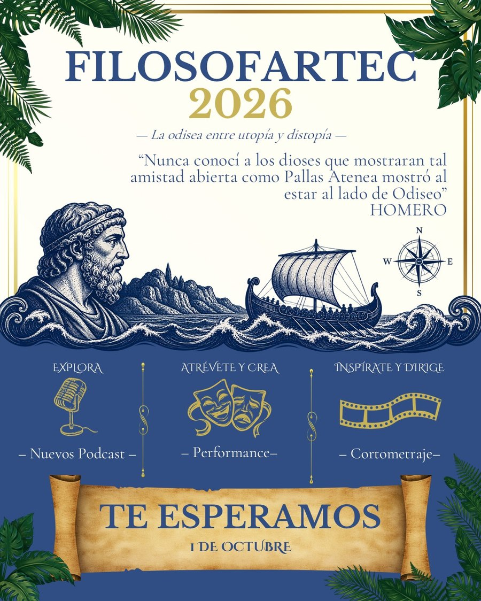
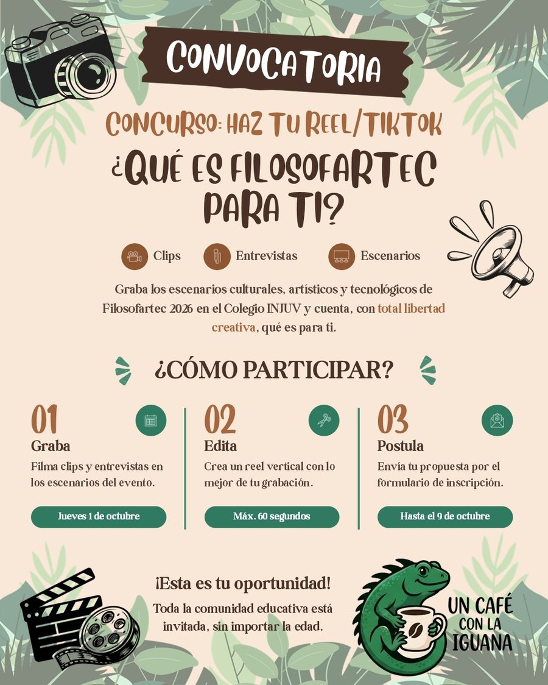
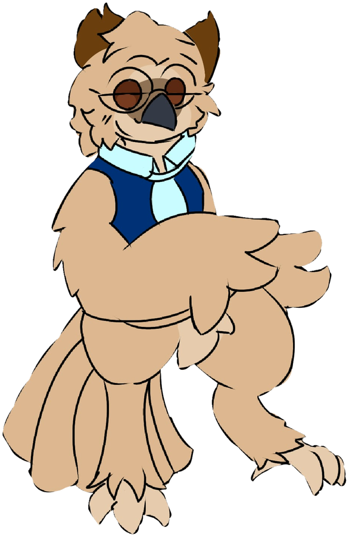
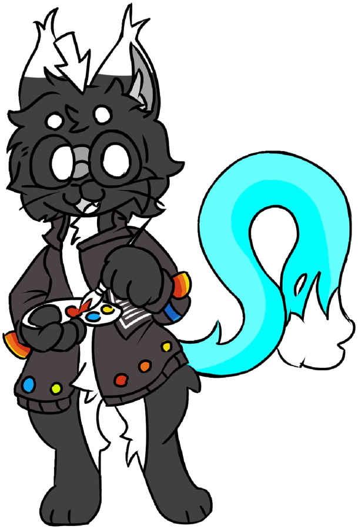
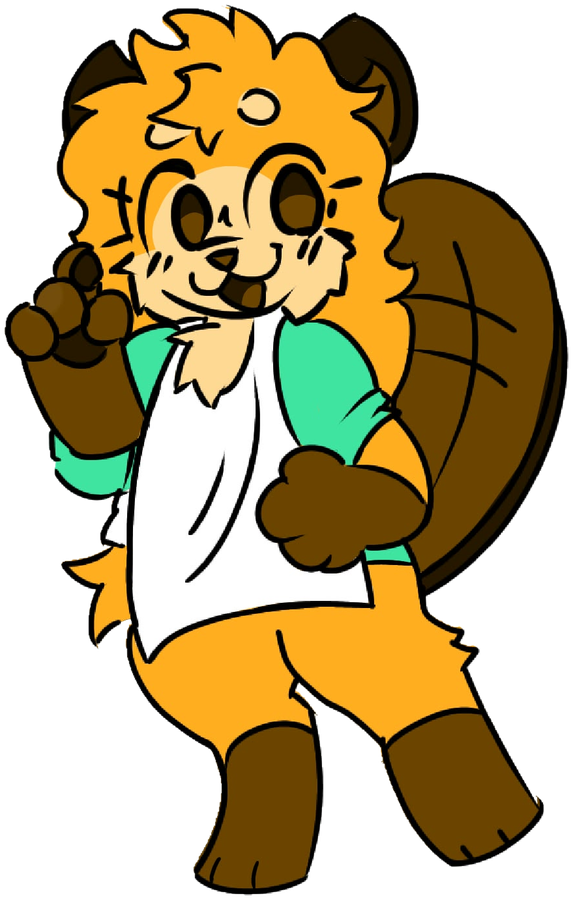

Colegio INJUV
Un café con la iguana
Las voces y memorias del colegio, contadas por nosotros mismos. La iguana observa, escucha y comparte.
Síguenos


Personajes




Estos personajes fueron creados por estudiantes del curso 9A del INJUV: Deivyd Steban Vega Lopez, Lucia Salgado Bohorquez y Sara Valeria Ordoñez Vargas. Son dibujos originales, hechos a mano y digitalizados, que se conservan tal como fueron creados.